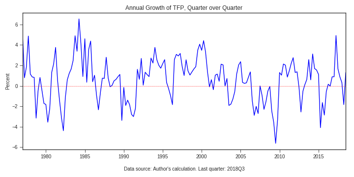

I am an assistant professor in economics at Trent University. I study and teach macroeconomics, with a special interest in quantifying aggregate implications of heterogeneity. I also apply structural estimation to studying firm dynamics and productivity growth.
Quarterly Total Factor Productivity data for Canada: I have built a seasonally-adjusted quaterly series of total factor productivity in Canadian business sector.
